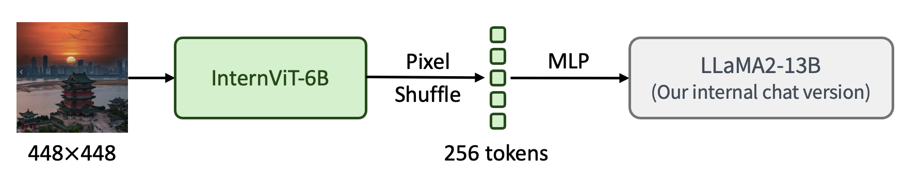

InternVL 1.1: Enhance Chinese and OCR Capabilities
| Type | Model | Date | Download | Note |
|---|---|---|---|---|
| Vision Large Language Model | InternVL−Chat−V1.1 | 2024.01.24 | 🤗 HF link | support Chinese and stronger OCR |
| Vision Foundation Model | InternViT−6B−448px−V1.0 | 2024.01.30 | 🤗 HF link | vision foundation model, 448 resolution |
We released 🤗 InternVL-Chat-V1.1, featuring a structure similar to LLaVA, including a ViT, an MLP projector, and an LLM. As shown in the figure below, we connected our InternViT-6B to LLaMA2-13B through a simple MLP projector. Note that the LLaMA2-13B used here is not the original model but an internal chat version obtained by incrementally pre-training and fine-tuning the LLaMA2-13B base model for Chinese language tasks. Overall, our model has a total of 19 billion parameters.

In this version, we explored increasing the resolution to 448 × 448, enhancing OCR capabilities, and improving support for Chinese conversations. Since the 448 × 448 input image generates 1024 visual tokens after passing through the ViT, leading to a significant computational burden, we use a pixel shuffle operation to reduce the 1024 tokens to 256 tokens.
Below is the model card.
Model Card
| Name | InternVL-Chat-V1.1 | |
|---|---|---|
| Model Size | Total | 19.11B |
| ViT | 5.91B | |
| MLP | 91.78M | |
| LLM | 13.12B | |
| Resolution | 448 × 448 | |
| Stage-1 | Training Data | Trained on 72M samples, including COYO, LAION, CC12M, CC3M, SBU, Wukong, GRIT, Objects365, OpenImages, and OCR-related datasets. In this stage, we load the pretrained weights of the original InternViT-6B-224px and interpolate its position embedding to the size corresponding to 448 × 448 pixels. Moreover, in order to reduce the number of visual tokens, we use a pixel shuffle operation to reduce 1024 tokens to 256 tokens. |
| Trainable Module | ViT + MLP | |
| Stage-2 | Training Data | A comprehensive collection of open-source datasets, along with their Chinese translation versions, totaling approximately 6M samples. |
| Trainable Module | MLP + LLM | |
The hyperparameters used for pre-training and fine-tuning are listed in the following table.
| Stage | Trainable Module | #Samples | Batch Size | Learning rate | Epoch | Max length | Weight decay |
|---|---|---|---|---|---|---|---|
| Pre-train | ViT + MLP | 72M | 8192 | 2e-5 | 1 | 384 | 0.05 |
| Fine-tune | ViT + MLP + LLM (full model) | 6M | 2048 | 2e-5 | 1 | 768 | 0.05 |
Performance
| method | vision encoder | LLM | res. | VQAv2 | GQA | VizWiz | SQA | TextVQA | POPE | MME | MMB | MMBCN | MMVet |
|---|---|---|---|---|---|---|---|---|---|---|---|---|---|
| LLaVA-1.5 | CLIP-L-336px | Vicuna-13B | 336 | 80.0 | 63.3 | 53.6 | 71.6 | 61.3 | 85.9 | 1531.3 | 67.7 | 63.6 | 35.4 |
| InternVL-Chat-V1.0 | IViT-6B-224px | Vicuna-13B | 336 | 80.2 | 63.9 | 54.6 | 70.1 | 58.7 | 87.1 | 1546.9 | 66.5 | 61.9 | 33.7 |
| InternVL-Chat-V1.0 | IViT-6B-448px | Vicuna-13B | 448 | 82.0 | 64.1 | 60.1 | 71.6 | 64.8 | 87.2 | 1579.0 | 68.2 | 64.0 | 36.7 |
| InternVL-Chat-V1.1 | IViT-6B-448px | LLaMA2-13B | 448 | 80.9 | 62.5 | 57.3 | 90.1 | 68.6 | 87.1 | 1659.8 | 75.4 | 70.3 | 46.7 |
Examples
Below is an example of the improved capabilities.
Citation
@article{chen2023internvl,
title={InternVL 1.1: Enhance Chinese and OCR Capabilities},
author={Chen, Zhe and Wu, Jiannan and Wang, Wenhai and Su, Weijie and Chen, Guo and Xing, Sen and Zhong, Muyan and Zhang, Qinglong and Zhu, Xizhou and Lu, Lewei and Li, Bin and Luo, Ping and Lu, Tong and Qiao, Yu and Dai, Jifeng},
journal={arXiv preprint arXiv:2312.14238},
year={2023}
}